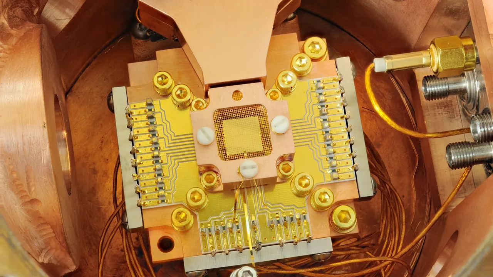

아이온큐를 볼 때 주주들이 가장 헷갈리는 지점은 “매출이 크게 늘었다”와 “아직 현금흐름은 멀다”가 동시에 맞는다는 점입니다. 양자컴퓨팅 회사는 소프트웨어 기업처럼 구독 매출이 매끄럽게 쌓이는 구조가 아니고, 대형 시스템 판매와 연구 계약, 클라우드 사용량, 정부·국방 프로젝트가 서로 다른 속도로 매출에 반영됩니다. 그래서 아이온큐의 다음 구간은 큐비트 숫자보다 계약이 실제 매출로 바뀌는 시간표를 봐야 합니다.
아이온큐의 2026년 1분기 발표는 겉으로 보면 매우 강합니다. 회사는 1분기 매출 6,470만 달러, 전년 대비 755% 성장, 현금·투자자산 31억 달러, RPO 4억7,000만 달러, 2026년 매출 가이던스 2억6,000만~2억7,000만 달러를 제시했습니다. 동시에 조정 EBITDA 손실은 1분기에 9,680만 달러였고, 연간 조정 EBITDA 손실 전망도 3억1,000만~3억3,000만 달러 범위입니다. 좋은 숫자와 무거운 비용이 같이 있는 셈입니다.
이 글의 질문은 단순합니다. 아이온큐가 양자컴퓨팅 대표주로 계속 인정받으려면 4억7,000만 달러 RPO가 어느 속도로 매출이 되고, 256큐비트 시스템 판매가 일회성 뉴스가 아니라 반복 가능한 제품 판매로 바뀌어야 합니다. 주가가 이미 큰 기대를 담고 움직인 종목일수록, 투자자는 “무엇을 발표했나”보다 “언제 돈으로 들어오나”를 더 냉정하게 봐야 합니다.
RPO는 매출이 아니라 시간표

RPO는 이미 체결된 계약 중 아직 수행하지 않은 의무에 배정된 거래가격입니다. 아이온큐는 이 숫자에 자금이 확정된 물량과 아직 예산 집행이 남은 물량이 함께 들어간다고 설명합니다. 그래서 RPO가 커졌다는 말은 수요 파이프라인이 좋아졌다는 신호이지만, 그 자체가 곧바로 현금흐름 개선을 뜻하지는 않습니다. 실제로 중요한 것은 다음 몇 분기 동안 이 RPO가 얼마나 매출로 인식되고, 그 매출이 어떤 마진을 남기느냐입니다.
아이온큐 주주가 가장 먼저 확인할 숫자는 다음 분기의 매출 가이던스보다 RPO 전환 품질입니다. 대형 시스템 판매가 장비 설치, 네트워크 구성, 보안 검증, 고객 승인 절차를 거쳐야 한다면 매출 인식은 한 번에 끝나지 않을 수 있습니다. 특히 대학, 정부, 국방 고객이 섞이면 계약은 크지만 일정은 길어질 수 있습니다. 이 지연이 나쁜 것은 아니지만, 시장이 너무 빠른 매출 전환을 기대하면 실망의 폭도 커집니다.
아이온큐가 발표한 상업 고객 매출 비중 약 60%, 국제 고객 매출 비중 약 35%, 멀티 제품 매출 비중 약 35%도 함께 봐야 합니다. 이 숫자가 유지되면 회사는 단순 연구 장비 업체가 아니라 컴퓨팅, 네트워킹, 센싱, 보안으로 고객 지갑을 넓히는 플랫폼 회사에 가까워집니다. 반대로 특정 대형 계약 몇 건이 분기 매출을 크게 흔드는 구조라면, 높은 성장률은 좋아 보여도 예측 가능성은 낮게 봐야 합니다.
256큐비트 시스템은 공장 문제
관련 영상
IonQ 급등 이후 장기 투자자가 확인할 선택지를 설명하는 한국어 롱폼 영상
아이온큐의 256큐비트 시스템 판매는 기술적으로 큰 신호입니다. 하지만 투자 관점에서는 “256큐비트”보다 “그 시스템을 반복적으로 만들고 납품할 수 있는가”가 더 중요합니다. 연구실에서 가능한 장비와 고객 현장에 설치되는 제품 사이에는 부품 조달, 칩 생산, 품질검사, 제어 장치, 냉각·전력·네트워크 구성, 유지보수 인력이라는 현실적인 장벽이 있습니다. 주주는 이 장벽이 비용으로 얼마나 잡히는지 봐야 합니다.
SkyWater 인수는 이 질문과 직접 연결됩니다. 아이온큐는 2026년 1분기 조정 EBITDA 손실에 SkyWater 관련 상업 관계 비용이 포함됐다고 밝혔고, 인수는 규제와 주주 승인 절차를 거쳐야 하는 상태라고 설명했습니다. 자체 칩 생산과 공급망 통제는 장기적으로 강점이 될 수 있지만, 단기에는 통합 비용과 설비 운영 부담을 키울 수 있습니다. 그래서 SkyWater는 단순 호재가 아니라 “생산 병목을 줄이는 대가로 비용 구조가 얼마나 무거워지는가”라는 질문입니다.
아이온큐가 트랩트 이온 방식에서 높은 정확도와 네트워크 확장성을 내세우는 것도 이 맥락에서 읽어야 합니다. 좋은 큐비트 품질은 분명 차별점이지만, 고객은 논문 수치만 사지 않습니다. 고객은 문제를 더 빠르게 풀 수 있는 시간, 보안 요건, 운영 안정성, 클라우드 접근성, 사후 지원을 함께 삽니다. 256큐비트 시스템이 진짜 의미를 가지려면 납품 이후 고객 사례가 반복되어야 합니다.
경쟁사는 다른 방식으로 돈을 법니다
관련종목을 함께 보는 이유는 네 회사가 같은 “양자컴퓨팅” 이름 아래 있어도 돈을 버는 방식이 다르기 때문입니다. 디 웨이브 퀀텀은 2026년 1분기에 매출 290만 달러, 예약 3,340만 달러, RPO 4,240만 달러, 현금·시장성 투자자산 5억8,840만 달러를 발표했습니다. 디 웨이브는 어닐링 방식과 게이트 모델을 함께 내세우며, 실제 기업 고객과 QCaaS 계약을 강조합니다. 아이온큐보다 매출 규모는 작지만 예약과 고객 수의 방향은 따로 봐야 합니다.
리게티 컴퓨팅은 2026년 1분기에 매출 440만 달러, 현금·투자자산 5억6,900만 달러를 발표했고, 108큐비트 Cepheus-1-108Q 시스템을 클라우드 플랫폼에서 사용할 수 있게 했다고 설명했습니다. 리게티는 초전도 방식과 자체 Fab-1 생산 능력을 이야기합니다. 이 회사의 핵심은 큐비트 숫자보다 멀티칩 시스템이 고객에게 얼마나 안정적으로 제공되는지입니다.
퀀텀 컴퓨팅은 2026년 1분기에 매출 약 370만 달러, 현금·투자자산 약 14억 달러, 계약 백로그 약 1,600만 달러를 발표했습니다. 이 회사는 양자 광학과 통합 포토닉스, 박막 리튬나이오베이트 제조 역량을 강조합니다. 아이온큐와 직접 같은 길을 걷는다기보다, 광자 기반 장비와 센싱·보안·고성능컴퓨팅 응용 쪽에서 다른 선택지를 제시하는 종목입니다.
따라서 아이온큐를 볼 때 비교는 단순 주가 등락률로 끝내면 안 됩니다. 아이온큐는 더 큰 RPO와 더 넓은 플랫폼 전략을 보여주고, 디 웨이브는 예약 증가와 기업 고객을 보여주며, 리게티는 클라우드에서 접근 가능한 초전도 시스템을 밀고, 퀀텀 컴퓨팅은 포토닉스 제조와 현금 보유를 앞세웁니다. 같은 테마라도 투자자가 확인해야 할 위험은 서로 다릅니다.
아이온큐 주주가 남겨야 할 질문
첫 번째 질문은 4억7,000만 달러 RPO 중 어느 정도가 실제로 12개월 안에 매출로 바뀌는가입니다. 숫자가 크다는 사실보다 전환 속도가 중요합니다. 두 번째 질문은 2026년 매출 가이던스 2억6,000만~2억7,000만 달러 안에서 기존 사업의 유기적 성장과 인수·신규 사업 효과가 어떻게 나뉘는가입니다. 성장률이 높아도 그 성장의 질이 다르면 밸류에이션을 보는 방식도 달라집니다.
세 번째 질문은 조정 EBITDA 손실입니다. 아이온큐는 현금과 투자자산이 크기 때문에 당장 생존을 걱정할 회사로 보기는 어렵습니다. 하지만 현금이 많다는 것과 사업이 스스로 돈을 번다는 것은 다른 이야기입니다. 연구개발, 영업, 제조 통합, 인수 관련 비용이 계속 커지면 주주는 “현금이 얼마나 오래 버티는가”보다 “언제 손실 폭이 줄기 시작하는가”를 봐야 합니다.
네 번째 질문은 정부·국방 프로젝트와 상업 고객의 균형입니다. DARPA HARQ, SDA HALO, 미사일 방어 관련 계약 기회는 아이온큐의 네트워킹·보안·센싱 확장성을 보여주는 중요한 신호입니다. 다만 정부 프로젝트는 예산과 일정, 조달 절차의 영향을 크게 받습니다. 상업 고객 매출이 계속 늘어야 아이온큐는 정책 수혜주를 넘어 반복 가능한 플랫폼 기업으로 평가받을 수 있습니다.
마지막으로 GAAP 순이익 숫자를 그대로 받아들이면 안 됩니다. 2026년 1분기 순이익은 워런트 부채 공정가치 변동 같은 비현금 요인의 영향을 크게 받았습니다. 투자자가 실적을 볼 때는 매출, 매출총이익, 영업손실, 조정 EBITDA, RPO 전환, 현금 소진 속도를 같이 봐야 합니다. 아이온큐의 좋은 시나리오는 “양자컴퓨터가 대단하다”가 아니라 “큰 계약이 반복 매출과 낮아지는 손실로 이어진다”는 문장으로 증명되어야 합니다.
아이온큐는 양자컴퓨팅 테마 안에서 가장 많은 관심을 받는 종목 중 하나입니다. 그래서 기회도 크지만 기대가 앞서갈 위험도 큽니다. 지금 주주에게 필요한 태도는 열광을 끄는 것이 아니라 확인 순서를 세우는 것입니다. 다음 실적에서는 RPO 전환, 256큐비트 시스템 납품 진척, SkyWater 통합 비용, 상업 고객 비중, 조정 EBITDA 손실 축소 여부를 한 줄씩 체크하는 편이 좋습니다.